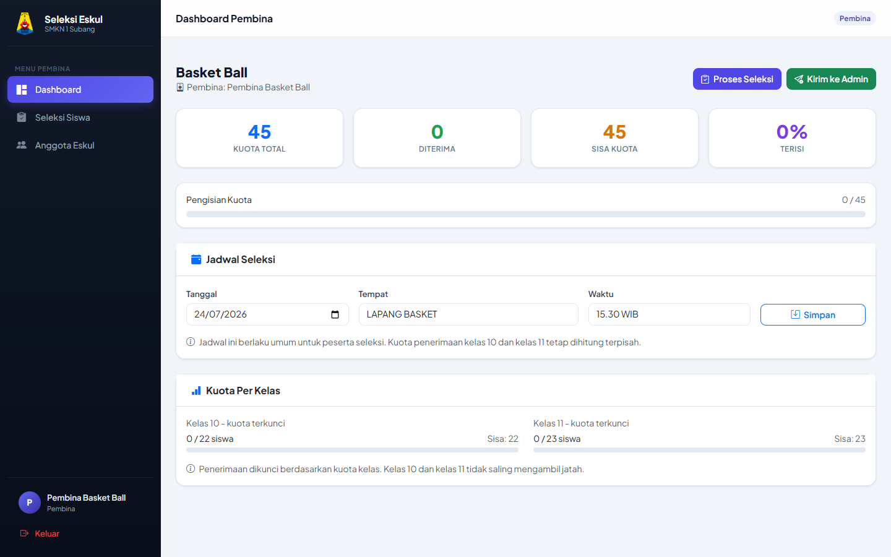
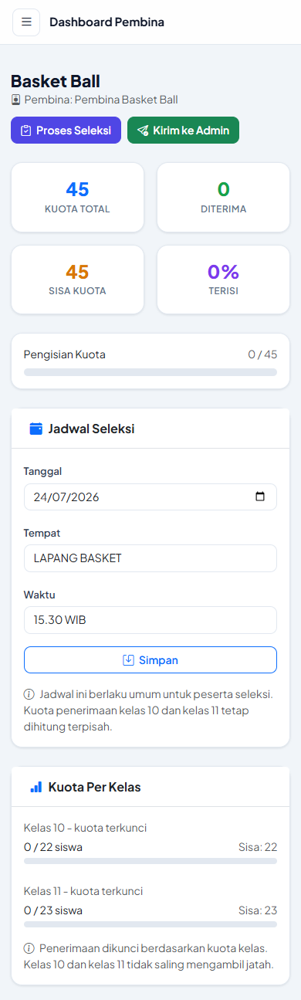
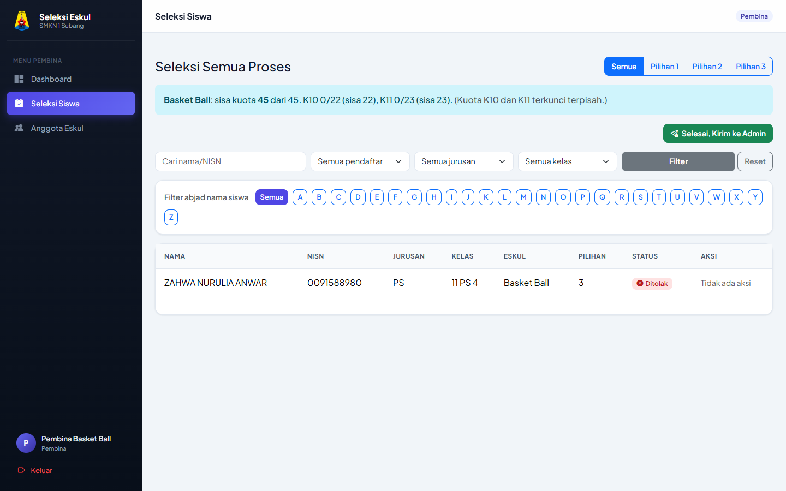
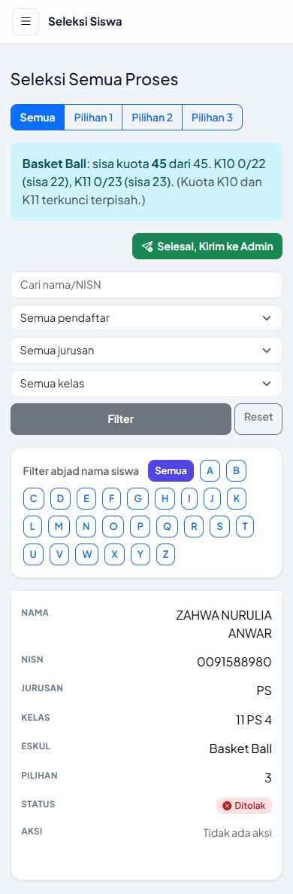
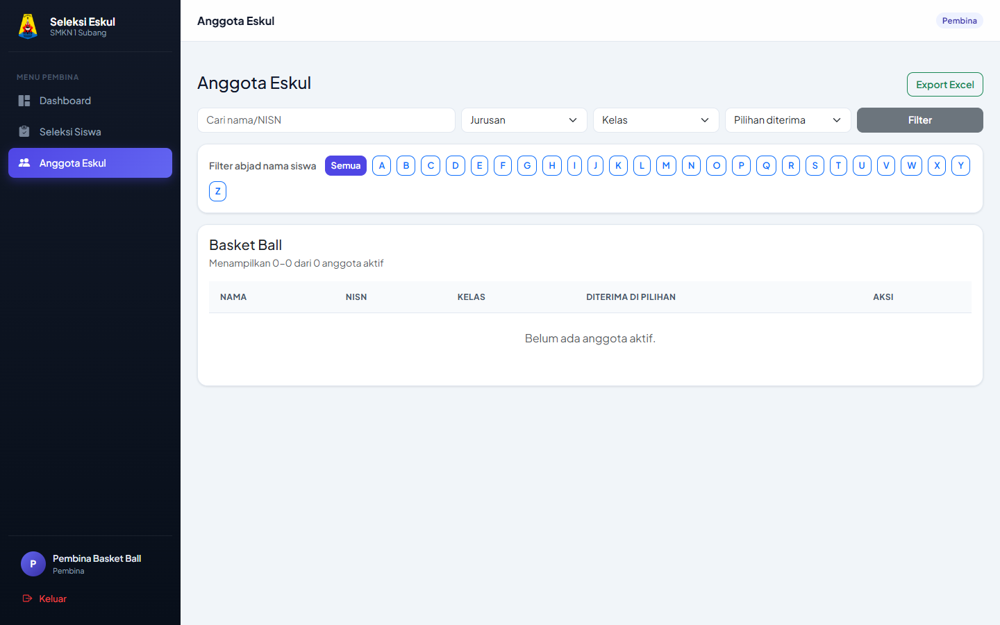
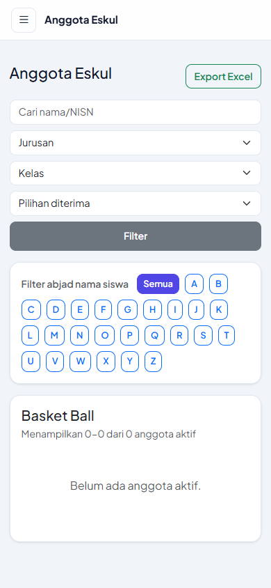

Panduan pembina eskul menyeleksi siswa dan mengelola anggota
Panduan ini khusus untuk pembina eskul. Isinya tidak hanya menjelaskan alur klik, tetapi juga fungsi setiap fitur, alasan fitur digunakan, dan keputusan apa yang harus pembina ambil selama proses seleksi.
Tujuan akun pembina
Akun pembina dibuat agar setiap pembina hanya fokus pada eskul yang dibinanya. Pembina tidak perlu melihat seluruh data sekolah, cukup melihat siswa yang mendaftar ke eskulnya, memutuskan hasil seleksi, dan mengirim hasil akhir ke admin.
Melihat pendaftar
Pembina melihat siswa yang sedang masuk proses seleksi di eskulnya.
Menentukan keputusan
Pembina memilih apakah siswa diterima atau ditolak berdasarkan hasil seleksi.
Menjaga kuota
Sistem menampilkan sisa kuota agar penerimaan tidak melebihi kapasitas.
Mengunci hasil akhir
Setelah selesai, pembina mengirim hasil ke admin agar data akhir bisa direkap.
1. Dashboard Pembina
Dashboard adalah halaman ringkasan. Fitur ini dipakai agar pembina cepat mengetahui kondisi eskul tanpa membuka tabel satu per satu.
Untuk apa?
Melihat gambaran jumlah pendaftar, siswa yang sedang diproses, anggota yang sudah diterima, dan sisa kuota.
Kenapa penting?
Pembina bisa tahu apakah seleksi masih perlu dilanjutkan, apakah kuota hampir penuh, atau apakah data sudah siap dikirim ke admin.
- Login menggunakan akun pembina.
- Buka menu Dashboard.
- Periksa ringkasan kuota, siswa yang sedang diproses, dan jumlah anggota aktif.
- Jika masih ada siswa diproses, lanjutkan ke menu Seleksi Siswa.


2. Seleksi Siswa Pendaftar
Menu Seleksi Siswa adalah tempat utama pembina mengambil keputusan. Di sinilah pembina melihat siswa yang memilih eskulnya dan menentukan apakah siswa tersebut diterima atau ditolak.
Tab Pilihan 1, 2, 3
Dipakai untuk melihat asal pilihan siswa. Pilihan 1 berarti siswa menjadikan eskul ini prioritas utama. Pilihan 2 atau 3 biasanya muncul setelah siswa tidak diterima di pilihan sebelumnya.
Status pendaftar
Dipakai untuk membedakan siswa yang masih perlu diproses, menunggu tahap, diterima, ditolak, atau dibatalkan.
Filter jurusan, kelas, abjad
Dipakai agar data tidak terlalu panjang dan pembina mudah mencari siswa tertentu, terutama saat pendaftar banyak.
Kuota kelas 10 dan 11
Dipakai agar penerimaan siswa kelas 10 dan 11 tidak saling mengambil jatah. Pembina perlu memperhatikan sisa masing-masing kelas.
- Buka menu Seleksi Siswa.
- Gunakan tab Semua, Pilihan 1, Pilihan 2, atau Pilihan 3.
- Gunakan filter nama/NISN, status pendaftar, jurusan, kelas, dan abjad.
- Periksa nama, NISN, jurusan, kelas, dan urutan pilihan siswa sebelum mengambil keputusan.
- Klik Terima jika siswa layak masuk eskul dan kuota kelasnya masih tersedia.
- Klik Tolak jika siswa tidak diterima. Sistem akan memproses siswa ke pilihan berikutnya jika ada.


3. Selesai Seleksi dan Kirim ke Admin
Tombol Selesai, Kirim ke Admin digunakan sebagai tanda bahwa pembina sudah selesai melakukan seleksi pada eskulnya. Setelah dikirim, admin akan mengetahui bahwa hasil dari eskul tersebut sudah final.
Untuk apa?
Mengirim tanda selesai ke admin agar hasil seleksi bisa masuk rekap akhir sekolah.
Kenapa dikunci?
Agar data yang sudah dianggap final tidak berubah-ubah lagi dan rekap admin tetap konsisten.
- Pastikan semua siswa yang tampil sudah diputuskan diterima atau ditolak.
- Periksa kembali jumlah anggota dan sisa kuota.
- Pastikan tidak ada siswa yang salah diterima atau salah ditolak.
- Klik tombol Selesai, Kirim ke Admin.
- Setelah dikirim, data pembina akan dikunci.
- Jika ada kesalahan setelah dikirim, pembina perlu menghubungi admin.
4. Anggota Eskul dan Export Excel
Menu Anggota Eskul menampilkan daftar siswa yang sudah diterima menjadi anggota aktif eskul. Halaman ini dipakai untuk pengecekan akhir dan arsip pembina.
Daftar anggota
Menunjukkan siswa yang sudah resmi diterima di eskul pembina.
Batalkan
Dipakai jika pembina terlanjur menerima siswa yang salah. Fitur ini hanya digunakan sebelum hasil dikirim ke admin.
Export Excel
Dipakai untuk mengunduh daftar anggota sebagai arsip, laporan, atau kebutuhan administrasi eskul.
Filter anggota
Dipakai saat anggota sudah banyak agar pembina cepat mencari siswa berdasarkan nama, kelas, jurusan, atau pilihan diterima.
- Buka menu Anggota Eskul.
- Gunakan filter nama/NISN, jurusan, kelas, pilihan diterima, dan abjad.
- Gunakan tombol Batalkan jika penerimaan perlu dikoreksi sebelum data dikirim ke admin.
- Klik Export Excel untuk mengunduh data anggota eskul.


Urutan kerja yang disarankan
- Buka Dashboard untuk melihat kondisi awal eskul.
- Buka Seleksi Siswa dan tampilkan status Sedang diproses.
- Proses siswa satu per satu dengan keputusan Terima atau Tolak.
- Jika data banyak, gunakan filter kelas, jurusan, abjad, atau tab pilihan.
- Cek menu Anggota Eskul untuk memastikan daftar diterima sudah benar.
- Jika ada kesalahan sebelum dikirim, gunakan Batalkan atau Tolak sesuai kebutuhan.
- Jika semuanya sudah selesai, klik Selesai, Kirim ke Admin.
- Gunakan Export Excel sebagai arsip pembina.